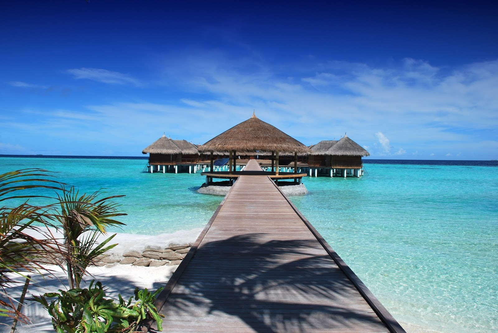

|
Maldives (/ˈmɔːldiːvz/, US: /ˈmɔːldaɪvz/; Dhivehi: ދިވެހިރާއްޖެ, romanized: Dhivehi Raajje), officially the Republic of Maldives, is an archipelagic state in the Indian subcontinent of Asia, situated in the Indian Ocean. It lies southwest of Sri Lanka and India, about 750 kilometres (470 miles; 400 nautical miles) from the Asian continent's mainland. The chain of 26 atolls stretches from Ihavandhippolhu Atoll in the north to Addu Atoll in the south (across the Equator). Comprising a territory spanning roughly 90,000 square kilometres (35,000 sq mi) including the sea, land area of all the islands comprises 298 square kilometres (115 sq mi), Maldives is one of the world's most geographically dispersed sovereign states as well as the smallest Asian country by land area and, with around 557,751 inhabitants, the 2nd least populous country in Asia. Malé is the capital and the most populated city, traditionally called the "King's Island" where the ancient royal dynasties ruled for its central location. |
